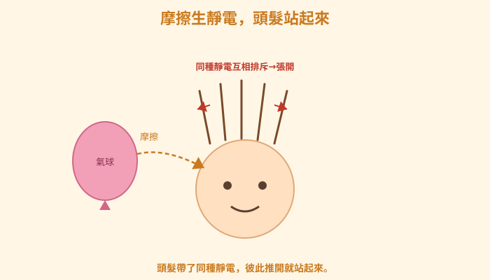
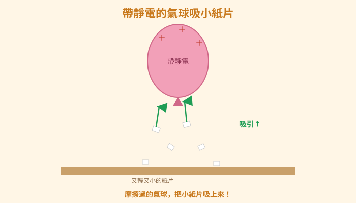
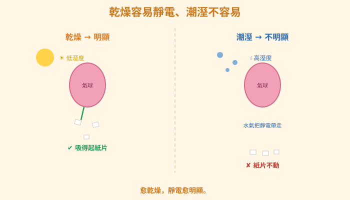
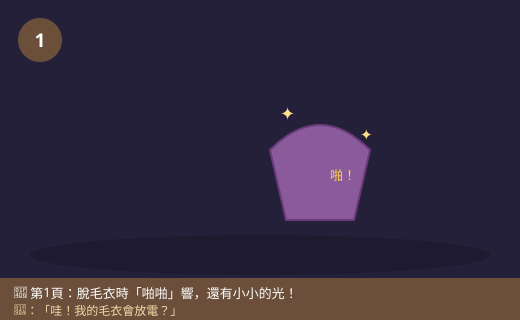
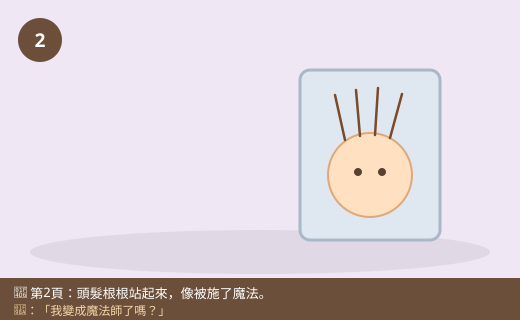
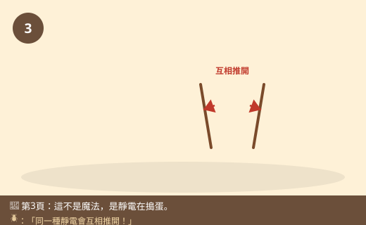
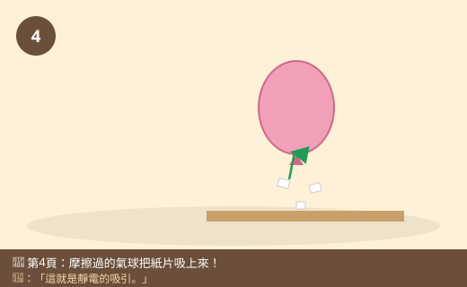
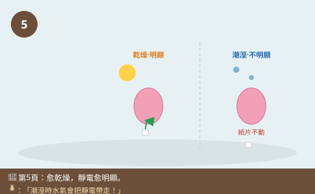
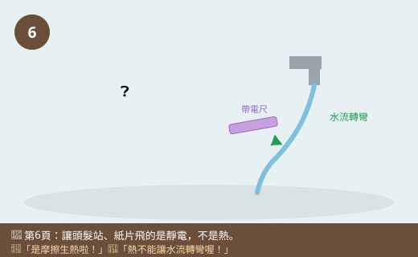

圖一（機制圖）：摩擦生靜電，頭髮站起來

- 圖像目的
- 說明摩擦產生靜電、同種電荷排斥使頭髮豎起。
- 圖中應出現的元素
- 氣球在頭髮上摩擦；頭髮根根張開豎起；標「摩擦」「同種靜電互相排斥」。
- 必須標示的科學概念
- 摩擦起電；同性相斥使頭髮站起來。
- 圖說
- 「頭髮帶了同種靜電，彼此推開就站起來。」
- AI 繪圖提示詞
- 溫暖手繪繪本風，氣球摩擦頭髮、頭髮根根豎起張開，標摩擦與排斥箭頭。繁體中文，白底。
- 避免畫錯的提醒
- 頭髮是「互相推開」張開豎起，不是被吸在一起。
💡 脫毛衣時「啪啪」響、頭髮翹起來；用氣球摩擦頭髮，居然能把小紙片吸起來！這些看不見的「電」，到底是怎麼變出來的？
| 適合年級 | 國小四年級 |
|---|---|
| 可銜接年級 | 四年級 → 六年級（電磁作用）→ 國中靜電與電荷 |
| 主題分類 | 聲音、光與電 |
| 核心概念 | 摩擦會產生靜電；帶靜電的物體會吸引輕小物、同類會互相排斥 |
| 關鍵詞 | 靜電、摩擦起電、吸引、排斥、氣球、乾燥 |
| 可銜接的國中概念 | 靜電、電荷、同性相斥異性相吸 |
| 建議閱讀時間 | 約 15 分鐘 |
| 適合搭配的課堂活動 | 氣球摩擦吸紙屑、吸頭髮、讓水流彎曲、跳舞的鹽 |
冬天的晚上，小狐同學洗完澡要換睡衣，把套頭毛衣往上一脫——「啪！啪！啪！」一連串細細的聲音，黑黑的房間裡還閃過一點點小小的光！他嚇了一跳：「哇！我的毛衣會放電？」脫下來後照鏡子，更好笑了——他的頭髮全都翹了起來，根根分明地站著，像被施了魔法一樣。
「媽媽！我的頭髮站起來了！」小狐同學一邊笑一邊用手去壓，可是手一放開，頭髮又翹起來。他還發現，剛脫下的毛衣靠近手臂的汗毛，汗毛竟然也會「跟著飄過去」。「這到底是怎麼回事？是我變成魔法師了嗎？」
隔天他把這件事告訴甲蟲博士。甲蟲博士眼睛一亮：「小狐，這可不是魔法，是『靜電』在搗蛋！你脫毛衣的時候，毛衣和頭髮互相『摩擦』，就會產生看不見的靜電。帶了靜電的頭髮，彼此會『推開』，所以才會一根根站起來！」小狐同學half信半疑：「摩擦一下就會有電？那我豈不是隨時都能發電？」
黑熊老師笑著拿出一顆氣球：「來，我變個魔術給你看。」他把氣球在頭髮上用力磨了幾下，然後靠近桌上撕碎的小紙片——神奇的事發生了，小紙片「咻」地一下全被氣球吸了上去！小狐同學看得目瞪口呆。黑熊老師說：「這就是摩擦產生的靜電。今天我們就來揭開『靜電魔法』的祕密，你會發現，原來冬天常常電到人的那個『啪』，背後有很有趣的科學！」
黑熊老師，為什麼脫毛衣的時候頭髮會站起來？
因為毛衣和你的頭髮互相摩擦，會產生靜電。每根頭髮都帶了「同一種」的靜電，而同一種靜電會互相排斥（推開），所以頭髮們你推我、我推你，就一根根張開站起來了。
那氣球為什麼可以把小紙片「吸」起來？
氣球在頭髮上摩擦後，也帶了靜電。帶靜電的氣球靠近又輕又小的紙片時，會產生吸引力，把紙片吸上來。所以靜電有時候排斥（像頭髮）、有時候吸引（像吸紙片），要看情況。
補一個關鍵冷知識！為什麼冬天特別容易被靜電電到？因為冬天空氣很乾燥，靜電容易累積在身上跑不掉；夏天或潮溼的時候，空氣裡的水氣會幫忙把靜電「帶走」，就比較不會啪啪叫。所以愈乾燥，靜電愈明顯。
原來如此！那被靜電電到會不會危險呀？有點痛耶。
平常生活中這種摩擦產生的小靜電，電量很小、不會有危險，只是那一下會讓你嚇一跳、有點刺刺的。但要注意——天上的閃電也是一種超大的靜電！那個能量非常巨大、非常危險，打雷時千萬不要待在空曠處或大樹下。所以身上的小靜電和閃電，是「同一種現象、不同規模」。
那有沒有辦法讓靜電不要一直電我？
有喔！可以讓身上累積的靜電「慢慢流走」。像碰金屬門把前，先用手摸一下牆壁或木頭，或是讓房間不要太乾燥（開加溼器）、穿純棉衣物，都能減少靜電。乾燥的冬天最容易靜電，多補充一點溼度就好多了。
做靜電實驗要記得：實驗在乾燥的天氣比較容易成功（溼度高會失敗）。氣球要用力多摩擦幾下、紙片要撕得又小又輕。要注意氣球別摩擦到眼睛附近，也不要拿靜電去電同學嚇人，那樣不禮貌喔！
哼，靜電就是「摩擦生出來的熱」啦！摩擦會發熱，熱熱的就會把頭髮和紙片吸住，跟電根本沒關係！
迷思怪獸，這個要更正喔！摩擦確實也會生熱，但讓頭髮站起來、吸住紙片的是靜電，不是熱。你想想看：如果是熱造成的，那應該是靠近就吸、離遠就沒事，可是靜電還會讓頭髮互相排斥站起來、讓水流轉彎——這些都不是「熱」能做到的，是電的吸引與排斥。而且用溼手或潮溼天氣，摩擦一樣會生熱，卻吸不起紙片，可見關鍵是靜電不是熱！
原來讓頭髮站起來的是靜電的「排斥」！我要來玩氣球吸紙片。
兩個東西互相摩擦（像毛衣磨頭髮、氣球磨頭髮），會產生看不見的靜電。帶了靜電的東西有兩種本領：一種是吸引——像帶靜電的氣球能把又輕又小的紙片吸起來；另一種是排斥（互相推開）——像每根頭髮都帶了同一種靜電，彼此推開就一根根站起來。冬天空氣乾燥時靜電最明顯（潮溼時水氣會把靜電帶走）。平常摩擦的小靜電不危險，只是刺刺的；但天上的閃電是超大的靜電，非常危險。
物體摩擦時，一方會得到、一方會失去帶電的微小粒子，使兩物分別帶上不同「性質」的靜電（電荷）。帶電物體之間：同性相斥、異性相吸——頭髮彼此帶同性電荷故互相排斥而豎起；帶電氣球靠近中性的小紙片會使紙片被吸引。乾燥時電荷不易經由空氣中的水分逸散，故靜電在冬天/低溼度時更明顯；接觸金屬、接地或潮溼環境可讓電荷中和或散去（放電）。日常摩擦靜電電量微小、無危險；而閃電是雲層累積大量電荷後的劇烈放電，能量巨大、極危險。摩擦同時會生熱，但吸引/排斥現象源於電荷而非熱。
物質由原子構成，原子含帶負電的電子與帶正電的原子核。摩擦起電是電子由一物轉移到另一物，使一方帶正電、一方帶負電（電荷守恆）。同性電荷相斥、異性相吸，庫侖靜電力隨距離增大而減弱。帶電體使附近絕緣體產生感應/極化而吸引輕小中性物（如紙屑、細水流偏折）。潮溼空氣的導電性較高，利於電荷逸散，故靜電較不易累積。放電可經接地或空氣游離（火花）發生，閃電即大氣尺度的放電。國中理化「靜電」「電荷與庫侖定律」「電流」會量化電荷、電場與放電，並區分靜電與電流的不同。









| 適合年級 | 四年級 |
|---|---|
| 材料 | 氣球（或塑膠尺、塑膠墊板）、乾布或頭髮、撕碎的小紙片、細細的水流（水龍頭轉最小）、乾燥的天氣、紀錄表 |
有沒有摩擦（帶不帶靜電），或環境的乾溼程度。
紙片有沒有被吸起、水流有沒有轉彎、頭髮有沒有飄起。
同一顆氣球、一樣的摩擦次數、一樣的紙片大小與水流粗細。
| 實驗 | 沒摩擦時 | 摩擦後（乾燥） | 摩擦後（潮溼） |
|---|---|---|---|
| 吸小紙片 | |||
| 水流轉彎 |
沒摩擦的氣球吸不起紙片；摩擦後的氣球能吸起小紙片、能讓細水流轉彎偏折，靠近頭髮還會把頭髮吸過去——這是因為摩擦讓氣球帶了靜電，能吸引又輕又小的物體。而在乾燥時實驗容易成功，潮溼時常常失敗，因為空氣中的水氣會把靜電帶走。這也證明讓紙片飛、水流轉彎的是靜電而不是「熱」——因為溼手摩擦一樣會生熱，卻吸不起紙片。
⚠️ 安全提醒：這些是安全的小靜電，電量很小不會有危險。但氣球摩擦後不要靠近眼睛，也不要拿靜電故意去電同學嚇人。切勿把「靜電實驗」聯想到去玩插座、電器或電線——那是會致命的電流，完全不同，絕對不可以碰！打雷時的閃電是巨大的靜電，非常危險，要遠離空曠處與大樹。玩水的地面要擦乾防滑。
👾 迷思說法：讓頭髮站起來、吸住紙片的是「摩擦生的熱」，不是電。
為什麼容易誤解：摩擦確實會發熱，容易把兩件事混在一起。
✅ 正確說法：讓頭髮豎起、吸紙片、使水流轉彎的是靜電，不是熱。熱沒辦法讓頭髮互相排斥、也不能讓水流轉彎。溼手摩擦一樣生熱卻吸不起紙片，可見關鍵是靜電。
可以怎麼驗證：用摩擦過的尺靠近細水流會轉彎，這是熱做不到的，證明是靜電。
👾 迷思說法：靜電只會「吸引」東西。
為什麼容易誤解：最常看到氣球吸紙片、吸頭髮的「吸」。
✅ 正確說法：靜電既會吸引也會排斥。帶同一種靜電的東西會互相排斥（所以頭髮根根站開），帶電體對輕小中性物則常表現為吸引。要看情況。
可以怎麼驗證：頭髮彼此推開站起來就是排斥；氣球吸紙片就是吸引。
👾 迷思說法：夏天和冬天靜電一樣多，只是冬天穿比較多才感覺得到。
為什麼容易誤解：覺得靜電和季節沒關係。
✅ 正確說法：乾燥時靜電才容易累積、變明顯。冬天空氣乾，靜電跑不掉；夏天或潮溼時，空氣的水氣會把靜電帶走，就比較不會電到人。
可以怎麼驗證：同樣摩擦氣球，在乾燥天容易吸紙片、在潮溼天常失敗。
👾 迷思說法：被靜電電到那一下，跟插座的電一樣，很危險。
為什麼容易誤解：都叫「電」，被電到又有點痛。
✅ 正確說法：身上摩擦的靜電電量很小、不會有危險，只是刺一下。但插座、電器的電流是持續而強大的，會致命，兩者完全不同，絕對不可以去玩插座或電線。
可以怎麼驗證：這需要用「知識」判斷，不能實測——記住：小靜電無害、插座電流致命，絕不觸碰帶電插座。
👾 迷思說法：金屬門把「特別會放電」，是因為金屬自己會發電。
為什麼容易誤解：常常一摸金屬門把就被電。
✅ 正確說法：不是金屬發電，是你身上累積了靜電。金屬容易讓電通過，當你碰到金屬門把時，身上的靜電就瞬間流走（放電），才會「啪」一下。先摸牆壁或木頭讓靜電慢慢流掉，就比較不會被電。
可以怎麼驗證：先摸牆壁再碰門把，通常就不會被電，可見電來自身上而非金屬。
1. 脫毛衣時頭髮站起來，主要是因為？
(A) 頭髮變重了 (B) 頭髮帶了同種靜電互相排斥 (C) 毛衣很熱 (D) 頭髮長長了
答案：B。同種電荷相斥使頭髮豎起。
2. 摩擦過的氣球能把小紙片吸起來，這表現出靜電的什麼本領？
(A) 吸引 (B) 發光 (C) 發熱 (D) 發出聲音
答案：A。帶靜電物體吸引輕小物。
3. 為什麼冬天特別容易被靜電電到？
(A) 冬天比較冷 (B) 冬天空氣乾燥，靜電容易累積 (C) 冬天穿比較多 (D) 冬天電比較多
答案：B。乾燥時靜電不易散去而更明顯。
4. 下列關於「靜電」和「插座的電」的說法，何者正確？
(A) 兩個一樣危險 (B) 身上小靜電無害、插座電流致命，完全不同 (C) 都可以隨便玩 (D) 靜電比插座危險
答案：B。小靜電無害，但絕不可玩插座電流。
5. 想減少身上的靜電，下列哪個方法有幫助？
(A) 讓房間更乾燥 (B) 多穿容易起靜電的衣服 (C) 碰金屬前先摸牆壁或木頭、房間別太乾 (D) 用力摩擦身體
答案：C。先放電、增加溼度可減少靜電。
1. 靜電有「吸引」和「排斥」兩種表現，請各舉一個生活中的例子。
吸引：摩擦過的氣球把小紙片、頭髮吸起來（或塑膠袋黏手）。排斥：脫毛衣後頭髮帶同種靜電互相推開、根根站起來。（同種靜電互相排斥、帶電體吸引輕小物。）
2. 為什麼「讓頭髮站起來、吸住紙片的是熱」這個說法是錯的？你會怎麼證明是靜電而不是熱？
因為熱沒辦法讓頭髮互相排斥站起來，也不能讓水流轉彎。可以用摩擦過的塑膠尺靠近細細的水流，水流會偏向尺——這是靜電的吸引造成的，熱做不到。而且用溼手摩擦一樣會生熱，卻吸不起紙片，可見關鍵是靜電不是熱。
3. 為什麼在潮溼的天氣做「氣球吸紙片」常常會失敗？
因為潮溼時空氣中有很多水氣，會把氣球上累積的靜電「帶走」，讓氣球留不住靜電，所以吸不起紙片。乾燥時靜電不容易跑掉、累積得多，實驗才容易成功。
1. 小狐想比較「哪一種材料摩擦後最會產生靜電」。他有氣球、塑膠尺、木頭尺、金屬湯匙。請你幫他設計一個公平的比較實驗。
可以用每一種材料都在同一塊乾布（或頭髮）上摩擦「相同的次數」，然後都靠近「同樣大小、同樣多」的小紙片，比較各自能吸起幾片紙。控制變因：摩擦次數、乾布、紙片大小數量、環境溼度都一樣，只改變「材料」。預期塑膠類（氣球、塑膠尺）比較會帶靜電，木頭和金屬比較不會（金屬還會把電導走）。重點是能設計公平比較、只變一個變因。
2. 冬天奶奶常在碰金屬門把時被電到，覺得很不舒服。請你用這一課學到的知識，給奶奶兩個「減少被靜電電到」的實用建議，並說明理由。
建議一：碰金屬門把前，先用手摸一下牆壁、木頭或用鑰匙先碰門把，讓身上的靜電慢慢流掉再開門，就不會突然「啪」一下。建議二：讓室內不要太乾燥（例如開加溼器、放一盆水），或穿純棉衣物少穿易起靜電的化纖衣，因為潮溼和棉質比較不容易累積靜電。理由都是：減少靜電累積或先安全地放掉靜電。
| 向度 | 待加強（1） | 通過（2） | 優秀（3） |
|---|---|---|---|
| 概念理解 | 把靜電當成熱 | 知道摩擦起電會吸引輕小物 | 能區辨吸引與排斥並解釋溼度影響 |
| 探究技能 | 無法完成觀察 | 能操作靜電實驗並記錄 | 能控制變因比較材料或溼度並歸納 |
| 安全態度 | 混淆靜電與電流危險性 | 知道不玩插座、無害靜電 | 主動辨別危險並提出防靜電建議 |
| 檢核項目 | 結果 | 備註 |
|---|---|---|
| 科學概念是否正確 | ✅ | 摩擦起電、同性相斥異性相吸、溼度影響、靜電與電流不同、閃電為大規模靜電，敘述正確。 |
| 是否符合年級理解程度 | ✅ | 四年級以脫毛衣、氣球吸紙片等生活經驗切入，定性說明。 |
| 是否有錯誤或過度簡化的比喻 | ✅ | 「靜電魔法」為引起動機，已澄清非魔法、非熱。 |
| 是否清楚區分觀察、推論與解釋 | ✅ | 由吸紙片/水流轉彎觀察推論靜電作用，並以溼度對照驗證。 |
| 圖像提示詞是否可能造成誤解 | ✅ | 已提醒頭髮是排斥、紙片要輕小、乾溼對比。 |
| 實驗是否安全 | ✅ | 強調小靜電無害但嚴禁玩插座電流、遠離閃電、防滑，安全。 |
| 是否需要補充資料來源 | ✅ | 對應 INe-Ⅱ-1 與探究學習表現；電荷系統內容屬國中，見教師補充。 |
| 是否適合轉成 HTML 網頁 | ✅ | 結構完整，含互動測驗與摺疊區。 |